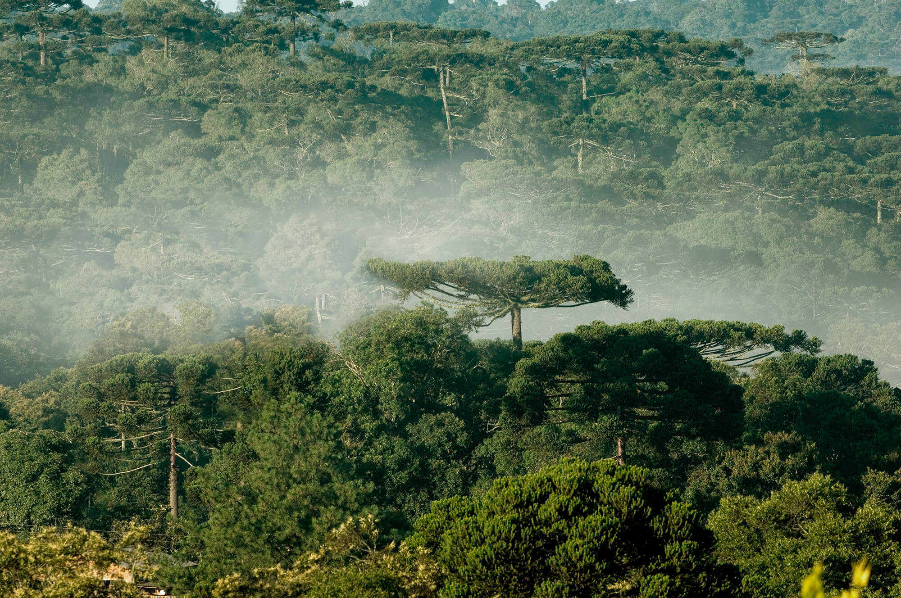
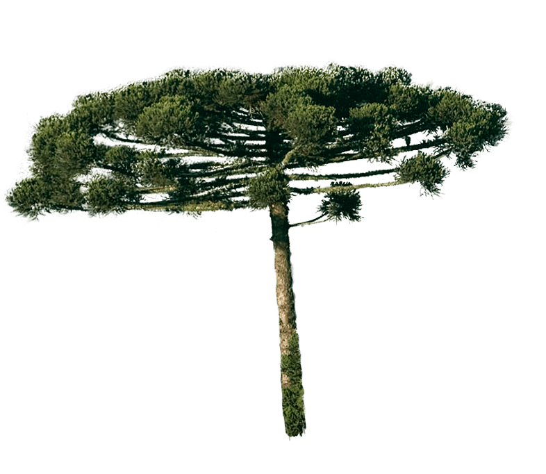

Sistema agroflorestal
As ovelhas são criadas a pasto, vivendo em total
sintonia com o bioma nativo repleto de araucárias,
pau-brasil, aroeiras e paineiras associadas a um rico
olival, frutas vermelhas e pomares orgânicos.
As ovelhas são criadas a pasto,
vivendo em total
sintonia com o bioma nativo repleto de araucárias,
pau-brasil, aroeiras e paineiras associadas a um rico
olival, frutas vermelhas e pomares orgânicos.
